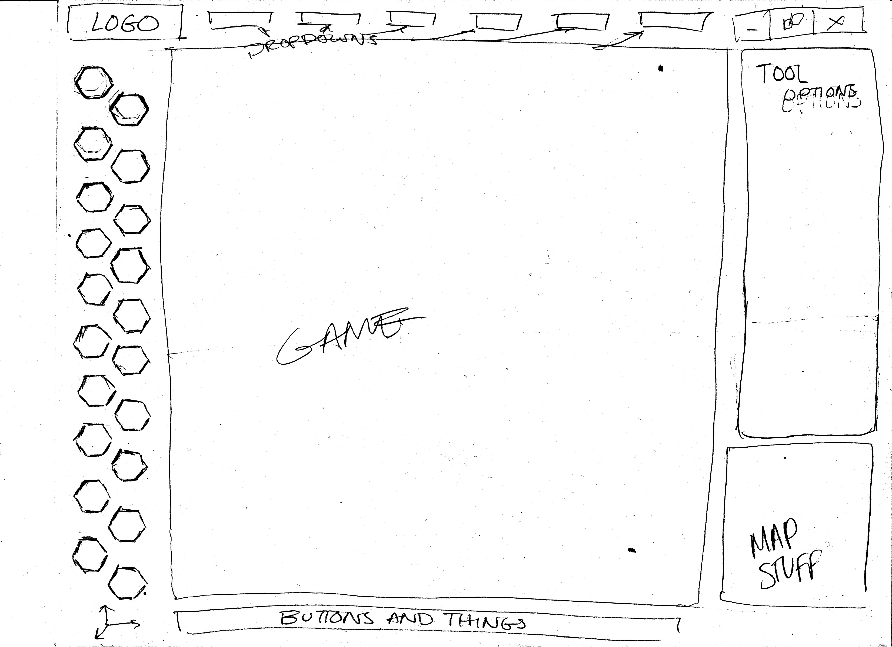
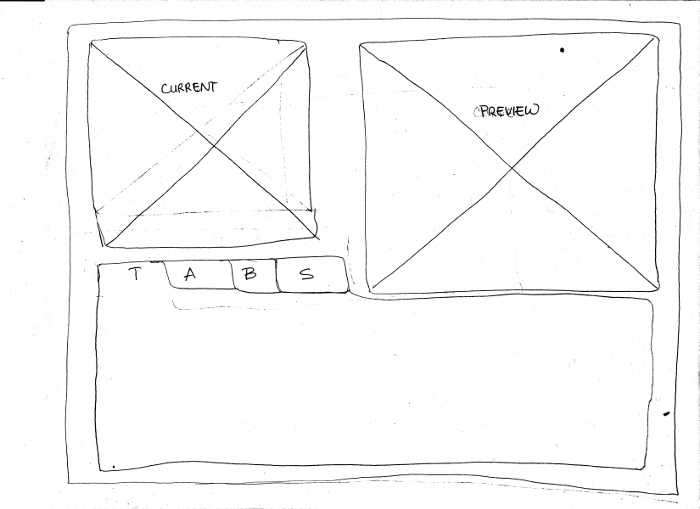
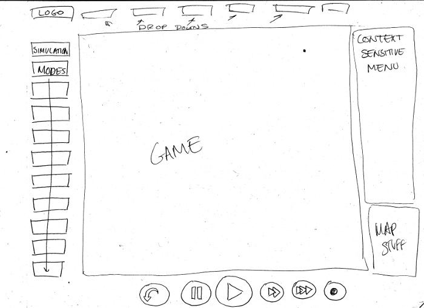
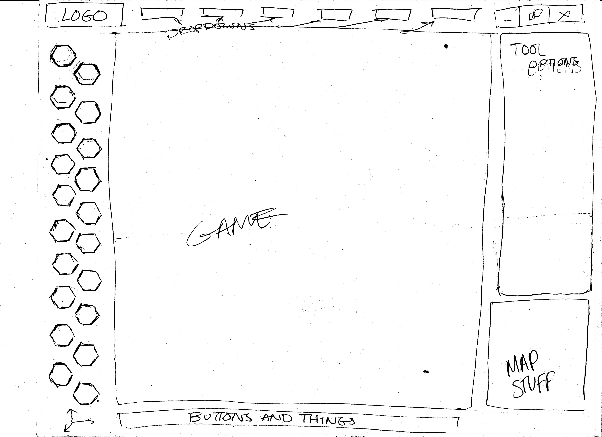
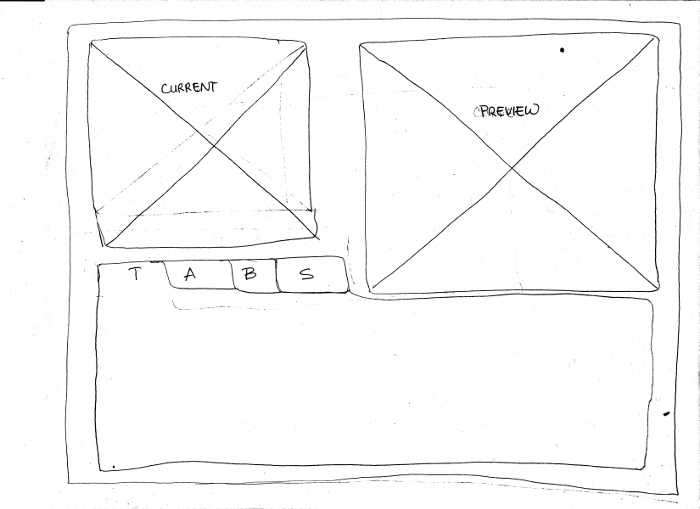
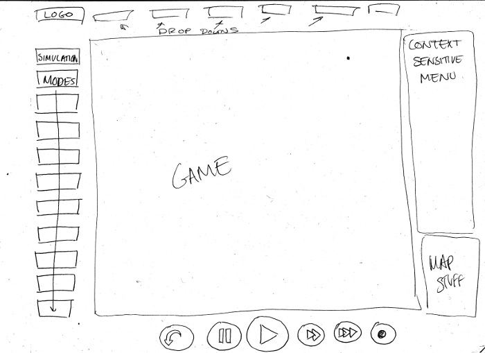
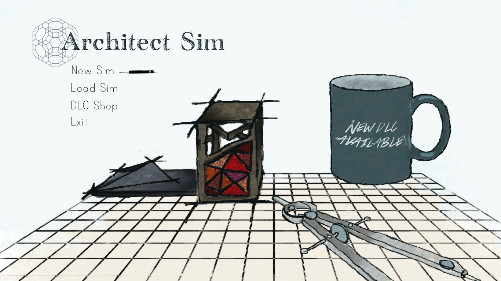
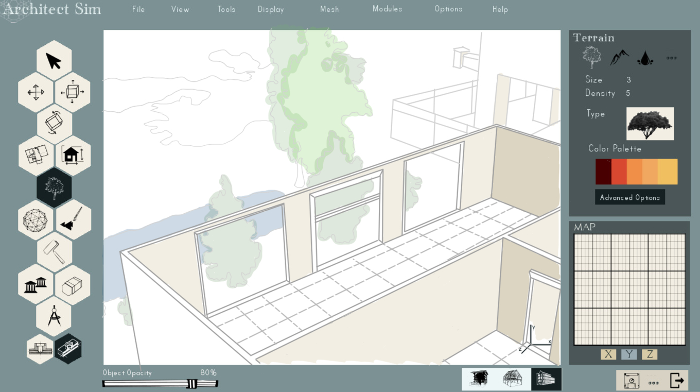
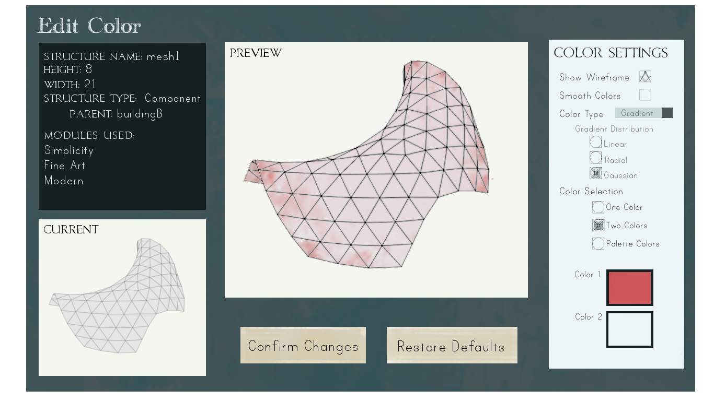
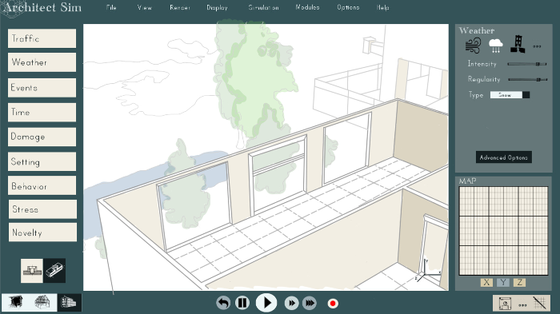

Design
The visual design process for a portion of the UI necessary for a hypothetical game/application, for a group project assigned in an Interaction Design course. Our hypothetical application was a building simulator, similar to a combination of Maya 3D and SimCity. Design Doc

The mood board for the UI, made by me. the color scheme was eventually changed to fit the preferences of the entire team.
 





Wireframes, made by me.. Some changes were made between these and the creation of the mockups.




Mockups, made by me, except for the vector art used as a stand in for the gameplay view, which was made by my teammate Jeanette Forbes.